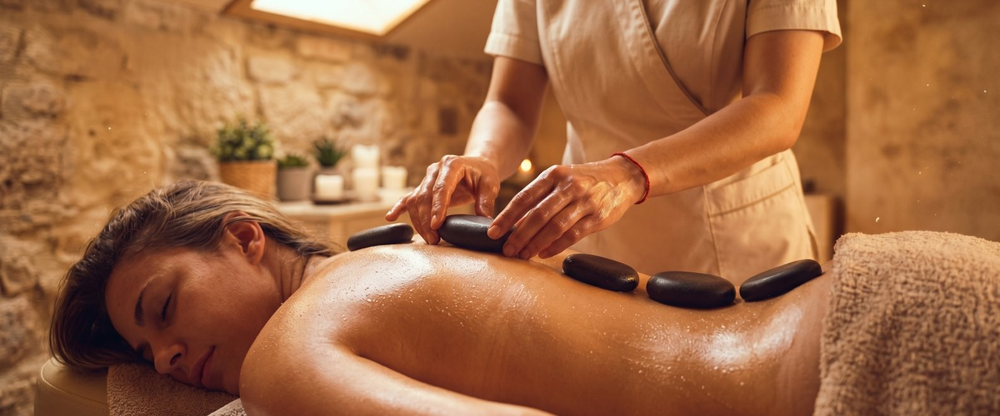
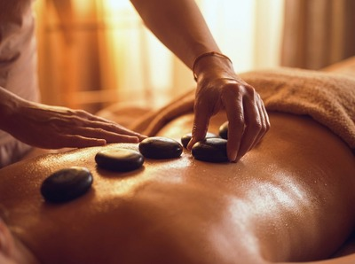
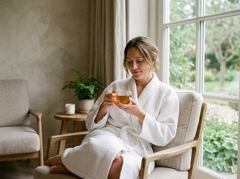

If muscle tension, poor circulation, or accumulated stress are leaving your body feeling heavy and locked up, hot stone massage in Greenock offers something deeper than a standard treatment can reach.

Heat and skilled hands work together to soften tissue in a way that hands alone cannot always reach. That makes this one of the most effective treatments for clients who carry chronic tightness or find it hard to fully switch off.
Hot stone massage uses smooth, heated basalt stones placed and moved across the body. Basalt is a volcanic rock that holds heat well. The therapist positions stones along key points on the back, shoulders, and legs.
The stones are then used as an extension of the hands, applying flowing strokes and targeted pressure. Heat penetrates the muscle before deeper work begins. This means the body releases tension more readily and the treatment reaches layers that would otherwise take much longer to access.

At Thai Massage Greenock, Jariya combines heated stone technique with her background in traditional Thai bodywork. She reads what each client needs and adjusts pressure throughout the session.
This treatment suits anyone who carries persistent tension and finds that lighter massage does not quite reach it. It works well for desk workers with knotted upper backs, people managing chronic stress, and anyone who runs cold or struggles to relax during a session.
It also suits clients who want the depth of a Thai oil massage with the added benefit of heat.
Book your session today and choose the duration that works for you.
Your session begins with a short consultation. Jariya will find out where you are holding tension and check that hot stone massage is right for you.
You will lie on the treatment table while smooth basalt stones, heated to the correct working temperature, are placed along your spine and across key muscle groups. Jariya will then use the stones alongside her hands to work through the body, alternating between placed stones and active strokes throughout.

Sessions run for 60 or 90 minutes. You will leave feeling warm through to the core, with a clear looseness in areas that were tight on arrival.
Thai Massage Greenock is a therapist-led practice on South Street in Greenock. Jariya serves clients across Inverclyde, including Gourock, Port Glasgow, and beyond. She trained at the Wat Po temple in Bangkok and keeps detailed notes on every client, so each session builds on the last rather than starting from scratch.
Get in touch to book your appointment and take the first step towards lasting relief.
You will undress to your comfort level, typically to underwear, and will be covered with a sheet throughout the treatment. Jariya will only uncover the area being worked on at any one time. If you would prefer to keep more clothing on, just let her know at the start of your session.
Sessions are available as 60 or 90 minutes. For a full-body treatment with time to properly address areas of tension, the 90-minute option gives the most thorough result. You can select your preferred duration when you book your appointment online.
The stones are heated to a working temperature that is warm and deeply comforting, not uncomfortable. Jariya monitors the temperature throughout and adjusts placement and pressure accordingly. If anything feels too warm at any point, just say so and she will adapt immediately.
Most clients feel a deep, settled calm for the rest of the day, with noticeably looser muscles in areas that were tight before the session. It is common to sleep particularly well that night. Drinking plenty of water afterwards helps the body process the treatment fully.
Hot stone massage is not advised during pregnancy or for those with certain circulatory conditions, including high blood pressure. The heat can place extra demand on the heart and circulation.
Jariya carries out a consultation before every session. If there is any doubt, she will suggest a more suitable option such as Thai aromatherapy massage.
Traditional Thai massage uses assisted stretching and pressure along the body's sen energy lines. It is performed fully clothed on a mat. Hot stone massage focuses on warming deep muscle tissue using heated basalt stones combined with flowing strokes, and is performed on a treatment table.
Both treatments address tension and support recovery. Hot stone massage is especially useful for clients who carry chronic tightness or find it hard to relax. You can read more about traditional Thai massage to compare the two.